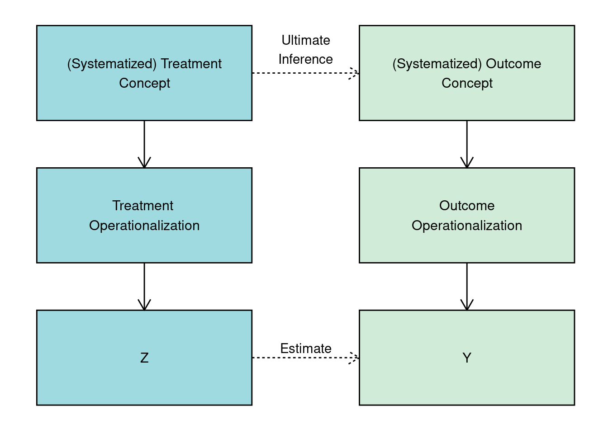
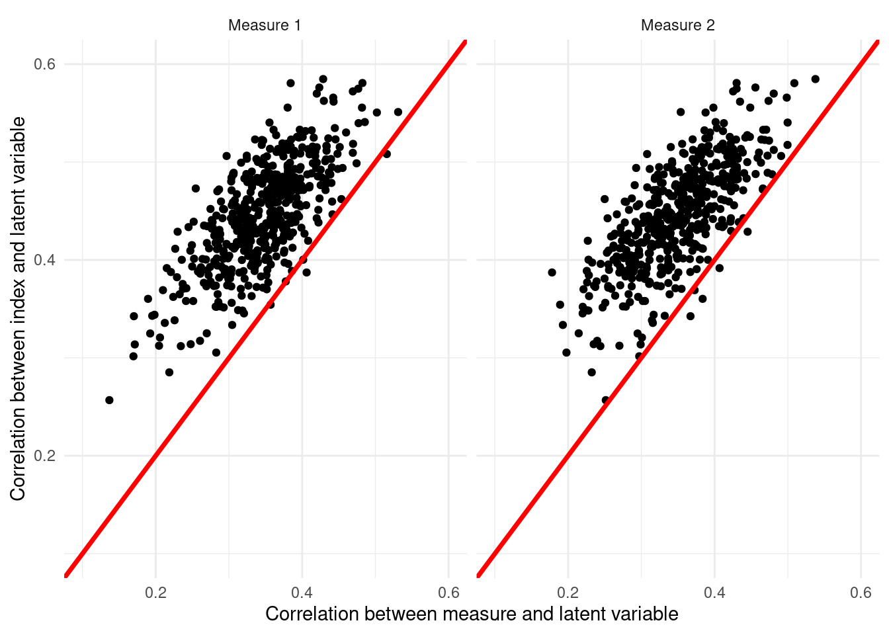
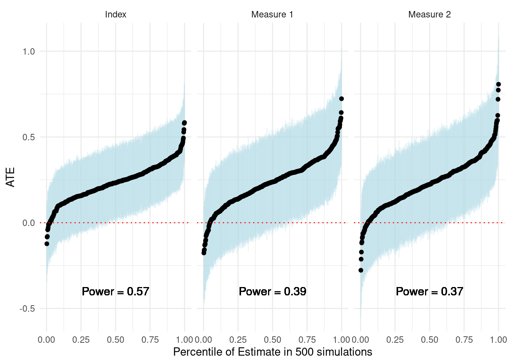

10 Things to Know About Measurement in Experiments
1. The validity of inferences we draw from an experiment depend on the validity of the measures used.
We typically experiment in order to estimate the causal effect of a treatment, \(Z\), on an outcome, \(Y\). Yet, the reason that we care about estimating this causal effect is, in principle, to understand characteristics of the relationship between two theoretical, unobserved, concepts measured by observed variables \(Z\) and \(Y\).
Following Adcock and Collier (2001), consider the measurement process graphed in Figure 1 in three steps. First, researchers begin with systematized concept, a clearly-defined theoretical construct. From this concept, the researcher develops an indicator mapping the concept onto a scale or a set of categories. Finally, units or cases are scored on the indicator, yielding a measurement of treatment, \(Z\) and an outcome \(Y\). A measurement is valid if variation in the indicator closely approximates variation in the underlying concept of interest.
An experimental research design should allow a researcher to estimate the causal effect of \(Z\) on \(Y\) under standard assumptions. But if the ultimate goal is to make an inference about causal effect of the concept that \(Z\) measures on the concept that \(Y\) measures, the inferences that we can hope to make on the basis of our experimental evidence are valid if and only if both measures are valid.
2. Measurement is the link between a researcher’s substantive and/or theoretical argument and an (experimental) research design.
When we consider the design of an experiment, we tend to focus on the process by which the randomly assigned treatment, \(Z\) is assigned and the joint distribution of \(Z\) and an outcome, \(Y\). In other words, we tend to divorce scores of \(Z\) and \(Y\) from broader concepts when considering the statistical properties of a research design. In this telling, two completely separate experiments with the same distribution of \(Z\) and \(Y\) could have identical properties.
For example, a clinical trial on the efficacy of aspirin on headaches and an experiment that provides information on an incumbent politician’s level of corruption and then asks the respondent if she will vote for the incumbent could have identical sized and distributed samples, assignments, estimands, and realizations of outcomes (data). Yet, this characterization of two completely distinct research projects that seek to make completely distinct inferences as “equivalent” may strike us as quite strange or even unsettling.
However, when we consider measurement as a fundamental component of research design, clearly these experiments are distinct. We observe measures of different concepts in the data for the two experiments. By considering the indicators and the broader concepts underlying the treatments and outcomes, we are forced to examine the researchers’ respective theories or arguments. In so doing, we can raise questions about the validity of the measures and the relationship between the validity of the measures and the validity of final, substantive, inferences.
3. Measuring treatments includes the operationalization of treatment as well as compliance with treatment assignment.
In an experiment, treatments are typically designed, or at a minimum, described, by the researcher. Consumers of experimental research should be interested the characteristics of the treatment and how it manipulates a concept of interest. Most treatments in social science are compound, or include a bundle of attributes. We may be interested in the effect of providing voters with information on their elected officials’ performance. Yet, providing information also includes the mode of delivery and who was delivering the information. To understand the degree to which the treatment manipulates a concept, we must also understand what else the treatment could be manipulating.
However, despite all the effort operationalizing a treatment, in experimental research, the link from the operationalization to the treatment indicator is fundamentally distinct from measurement of covariates or outcomes for two reasons. First, by assigning treatment, experimenters aim to control the values a given unit takes on. Second, for the treatment indicator, the score comes from assignment to treatment, which is a product of the randomization. A subject may or may not have received the treatment, but her score on the treatment indicator is simply the treatment that she was assigned to, not the treatment she received.
When subjects receive treatments other than those to which they are assigned, we typically seek to measure compliance — whether the treatments were delivered and to what extent. To do so, we define what constitutes compliance with treatment assignment. In determining what constitutes compliance, researchers should consider the core aspect of how the treatment manipulates the concept of interest. At what point in the administration of the treatment does this manipulation occur? Once compliance is operationalized,we seek to code the compliance indicator in a manner faithful to this definition.
For example, consider a door-to-door canvassing campaign that distributes information about the performance of an incumbent politician. Households are assigned to receive a visit from a canvasser who shares the information (treatment) or no visit (control). The treatment indicator is simply whether a household was assigned to the treatment or not. However, if residents of a household are not home when the canvasser visits, they do not receive the information. Our definition of compliance should determine what constitutes “treated” on our (endogenous) measure of whether a household received the treatment, here the information. Some common definitions of compliance may be (a) that someone from the household answered the door; or (b) that someone from the household listened to the full information script.
5. There are two types of measurement error that we should consider.
We can formalize measurement challenges quite simply. Suppose a treatment, \(Z_i\) is hypothesized to change preferences for democratic norms, \(\nu_i\). In principle, the quantity that we would like to estimate is \(E[\nu_i|Z_i = 1] - E[\nu_i|Z_i =0]\), the ATE of our treatment on preferences for democratic norms. However, \(\nu_i\) is a latent variable: we cannot measure it directly. Instead we ask about support for various behaviors thought to correspond to these norms. This indicator, \(Y_i\), can be decomposed into the latent variable, \(\nu_i\) and two forms of measurement error:
- Non-systematic measurement error, \(\delta_i\): This error is independent of treatment assignment, \(\delta_i \perp Z_i\).
- Systematic measurement error, \(\kappa_i\): This error is not independent of treatment assigniment, \(\kappa_i \not\perp Z_i\).
\[Y_i = \underbrace{\nu_i}_{\text{Latent outcome}} + \underbrace{\delta_i}_{\substack{\text{Non-systematic} \\ \text{measurement error}}} + \underbrace{\kappa_i}_{\substack{\text{Systematic} \\ \text{measurement error}}}\]
6. Measurement error reduces the power of your experiment.
Non-systematic measurement error, represented by \(\delta_i\) above, refers to the noise with which we are measuring the latent variable. In the absence of systematic measurement error, we measure:
\[Y_i = \underbrace{\nu_i}_{\text{Latent outcome}} + \underbrace{\delta_i}_{\substack{\text{Non-systematic} \\ \text{measurement error}}}\]
Now, consider the analytical power formula for a two-armed experiment. We can express \(\sigma\), or the standard deviation of the outcome as \(\sqrt{Var(Y_i)}\). Note that in the formula below, this term appears in the denominator of the first term. As \(\sqrt{Var(Y_i)}\) increases, statistical power decreases.
\[\beta = \Phi \left(\frac{|\mu_t− \mu_c| \sqrt{N}}{2 \color{red}{\sqrt{Var(Y_i)}}} − \Phi^{−1}\left(1 − \frac{\alpha}{2}\right)\right)\]
In what way does non-systematic measurement error \(\delta_i\) impact power? We can decompose \(\sqrt{Var(Y_i)}\) as follows:
\[\sqrt{Var(Y_i)} = \sqrt{Var(\nu_i) + Var(\delta_i) + 2 Cov(\nu_i, \delta_i)}\]
So long as \(Cov(\nu_i, \delta_i)\geq 0\) (we often assume \(Cov(\nu_i, \delta_i)= 0\)), it must be the case that the \(Var(Y_i)\) is increasing as measurement error, or \(Var(\delta_i)\) increases. This implies that power is decreasing as non-systematic measurement error increases. In other words, the noisier our measures of a latent variable, the lower our ability to detect effects of a treatment on a latent variable.
What about the case in which \(Cov(\nu_i, \delta_i) < 0\)? While this reduces \(Var(Y_i)\) (holding \(Var(\nu_i)\) and \(Var(\delta_i)\) constant), it also attenuates the variation that we measure in \(Y_i\). In principle, this should attenuate the numerator \(|\mu_t-\mu_c|\), which, if sufficient relative to the reduction in variance, will also reduce power.
7. Systematic measurement error biases estimates of causal effects of interests.
If we are estimating the Average Treatment Effect (ATE) of our treatment \(Z_i\), on preferences for democratic norms, \(\nu_i\), we are trying to recover the ATE, or \(E[\nu_i|Z_i = 1] - E[\nu_i|Z_i =0]\). However, in the presence of systematic measurement error, where measurement error is related to the treatment assignment itself (say, the outcome is measured differently in the treatment group than in the control group) a difference-in-means estimator on the observed outcome, \(Y_i\), recovers a biased estimate of the ATE. The effect of the treatment now includes the measurement difference as well as the difference between treated and control groups:
\[E[Y_i|Z_i = 1]−E[Y_i|Z_i = 0] = E[\nu_i + \delta_i + \kappa_i |Z_i = 1] − E[\nu_i + \delta_i + \kappa_i|Z_i =0]\] Because non-systematic measurement error, \(\delta_i\) is independent of treatment assignment, \(E[\delta_i|Z_i = 1] = E[\delta_i |Z_i = 0]\). Simplifying and rearranging, we can write:
\[E[Y_i|Z_i = 1]−E[Y_i|Z_i = 0] = \underbrace{E[\nu_i|Z_i = 1] − E[\nu_i|Z_i =0]}_{ATE} + \underbrace{E[\kappa_i|Z_i = 1] - E[\kappa_i|Z_i =0]}_{\text{Bias}}\]
There are various sources of non-systematic measurement error in experiments. Demand effects and Hawthorne effects can be motivated as sources of systematic measurement error. Moreover, designs that measure outcomes asymmetrically in treatment and control groups may be prone to systematic measurement error. In all cases, there exists asymmetry across treatment conditions in: (a) the way that subjects respond to being observed; or (b) the way that we observe outcomes that is distinct from any effect of the treatment on the latent variable of interest. The biased estimate of the ATE becomes the net of any effects on the latent variables (the ATE) and the non-systematic measurement error.
When designing an experiment, researchers can take various steps to limit systematic measurement error. First and foremost, they can attempt to use identical measurement strategies across all experimental groups. To limit demand and Hawthorne effects, researchers often aim to design treatments and measurement strategies that are as naturalistic and unobtrusive as possible. For example, sometimes it can be beneficial to avoid baseline surveys at the outset of an experiment that would reveal the purpose of a study to participants. Researchers may also want to separate treatment from outcome measurement phases to limit the apparent connection between the two. Ensuring that study staff are blind towards the treatment status of study participants can also help maintain measurement symmetry across treatment conditions. The use of placebo treatments sometimes helps to hide their treatment status even from study participants themselves. Finally, researchers sometimes supplement outcome measures such as survey questions that are particularly susceptible to demand effects with behavioral measures for which experimenter demand may be less of a concern. See de Quidt et al. (2018) for a way to assess the robustness of your experimental results to demand effects.
8. Leverage multiple indicators to assess the validity of a measure but be aware of the limitations of such tests.
Beyond consideration of the quality of the mapping between a concept and a measure, we can often assess the quality of the measure by comparing it to measures from alternate operationalizations of the same concept, closely related concepts, or distinct concepts. In convergent tests of the validity of a measure, we assess the correlation between alternate measures of a concept. If they are coded in the same direction, we expect the correlation to be positive and validity of both measures increases as the magnitude of the correlation increases. One limitation of convergent tests of validity is if two measures are weakly correlated, absent additional information, we do not know whether one measure is valid (and which) or whether both measures are invalid.
Gathering multiple indicators may also allow for researchers to assess the predictive validity of a measure. To what extent does a measure of a latent concept predict behavior believed to be shaped by the concept? For example, does political ideology (the latent variable) predict reported vote choice for left parties? This provides an additional means of validating a measure. Here, the higher the ability of an indicator to predict behavior (or other outcomes), the stronger the predictive validity of the indicator. Yet, we believe that most behaviors are a result of a complex array of causes. Determining whether a measure is a “good enough” predictor is a somewhat arbitrary determination.
Finally, we may want to determine whether we are measuring the concept of interest in isolation rather than a bundle of concepts. Tests of discriminant validity look at indicators of a concept and a related but distinct concept. In principle, we look for low correlations (correlations close to 0) between both indicators. One limitation of tests of discriminant validity is that we don’t know how underlying distinct concepts covary. It may be the case that we have valid indicators of both concepts, but they exhibit strong correlation (positive or negative) because units with high levels of \(A\) tend to have higher (resp. low) levels of \(B\).
In sum, the addition of more measures can help validate an indicator, but these validation tests are limited in what they tell us when they fail. To this extent, we should remain cognizant of the limitations in addition to the utility of collecting additional measures to simply validate an indicator.
9. The use of multiple indicators often improves the power of your experiment, but may introduce a bias-efficiency tradeoff.
Gathering multiple indicators of a concept or outcome may also improve the power of your experiment. If multiple indicators measure the same concept but are measured with (non-systematic) error, we can improve the precision with which we measure the latent variable by leveraging multiple measures.
There are multiple ways to aggregate multiple outcomes into an index. “10 Things to Know about Multiple Comparisons” describes indices built from \(z\)-score and inverse covariance weighting of multiple outcomes. There are also many other structural models for estimating latent variables from multiple measures.
Below, we look at simple \(z\)-score index of two noisy measures of a latent variable. We assume that the latent variables and both indicators “Measure 1” and “Measure 2” are drawn from a multivariate normal distribution and are positively correlated with the latent variable and with each other. For the purposes of simulation, we assume that we know the latent variable, though in practice this is not possible. First, we can show that across many simulations of the data, the correlation between the \(z\)-score index of the two measures and the latent variable is, on average, higher than the correlation between either of the indicators and the latent variable. When graphing the correlation of the individual measures and the latent variable against (\(x\)-axes) the correlation of the index and the latent variable (\(y\)-axis), almost all points are above the 45-degree line. This shows that the index approximates the latent variable with greater precision.
library(mvtnorm)
library(randomizr)
library(dplyr)
library(estimatr)
make_Z_score <- function(data, outcome){
ctrl <- filter(data, Z == 0)
return(with(data, (data[,outcome] - mean(ctrl[,outcome]))/sd(ctrl[,outcome])))
}
pull_estimates <- function(model){
est <- unlist(model)$coefficients.Z
se <- unlist(model)$std.error.Z
return(c(est, se))
}
do_sim <- function(N, rhos, taus, var = c(1, 1, 1)){
measures <- rmvnorm(n = N,
sigma = matrix(c(var[1], rhos[1], rhos[2],
rhos[1], var[2], rhos[3],
rhos[2], rhos[3], var[3]), nrow = 3))
df <- data.frame(Z = complete_ra(N = N),
latent = measures[,1],
Y0_1 = measures[,2],
Y0_2 = measures[,3]) %>%
mutate(Yobs_1 = Y0_1 + Z * taus[1],
Yobs_2 = Y0_2 + Z * taus[2])
df$Ystd_1 = make_Z_score(data = df, outcome = "Yobs_1")
df$Ystd_2 = make_Z_score(data = df, outcome = "Yobs_2")
df$index = (df$Ystd_1 + df$Ystd_2)/2
cors <- c(cor(df$index, df$latent), cor(df$Ystd_1, df$latent), cor(df$Ystd_2, df$latent))
ests <- c(pull_estimates(lm_robust(Ystd_1 ~ Z, data = df)),
pull_estimates(lm_robust(Ystd_2 ~ Z, data = df)),
pull_estimates(lm_robust(index ~ Z, data = df)))
output <- c(cors, ests)
names(output) <- c("cor_index", "cor_Y1", "cor_Y2", "est_Y1", "se_Y1",
"est_Y2", "se_Y2", "est_index", "se_index")
return(output)
}
sims <- replicate(n = 500, expr = do_sim(N = 200,
rhos = c(.6, .6, .6),
taus = c(.4, .4),
var = c(1, 3, 3)))
data.frame(measures = c(sims["cor_Y1",], sims["cor_Y2",]),
index = rep(sims["cor_index",], 2),
variable = rep(c("Measure 1", "Measure 2"), each = 500)) %>%
ggplot(aes(x = measures, y = index)) + geom_point() +
facet_wrap(~variable) +
geom_abline(a = 0, b = 1, col = "red", lwd = 1.25) +
scale_x_continuous("Correlation between measure and latent variable", limits = c(0.1, .6)) +
scale_y_continuous("Correlation between index and latent variable", limits = c(0.1, .6)) +
theme_minimal()
Now, consider the implications for power. In the simulations, we estimate of the ATE of a treatment on Measure 1, Measure 2, and the index. The following graph visualizes the estimates. The blue lines show 95 percent confidence intervals. The smaller confidence intervals about the index visualize the precision gains from leveraging both measures. We see that this manifests in higher statistical power for the experiment.
data.frame(est = c(sims["est_index",], sims["est_Y1",], sims["est_Y2",]),
se = c(sims["se_index",], sims["se_Y1",], sims["se_Y2",]),
outcome = rep(c("Index", "Measure 1", "Measure 2"), each = 500)) %>%
mutate(T = est/se,
sig = 1 * (abs(T) > 1.96)) %>%
group_by(outcome) %>%
mutate(power = sum(sig)/n(),
lab = paste0("Power = ", round(power, 2))) %>%
arrange(est) %>%
mutate(order = 1:500/500) %>%
ggplot(aes(x = order, y = est)) +
geom_errorbar(aes(ymin = est - 1.96 * se, ymax = est + 1.96 * se), width = 0,
col = "light blue", alpha = .25) +
geom_point() +
facet_wrap(~outcome) +
geom_text(x = 0.5, y = -.4, aes(label = lab), cex = 4) +
geom_hline(yintercept = 0, col = "red", lty = 3) +
theme_minimal() + xlab("Percentile of Estimate in 500 simulations") +
ylab("ATE")
We have examined an index composed of just two indicators. In principle, there are further efficiency gains to be made by incorporating more indicators into your index. Yet, as we increase the number of indicators, we should consider the degree to which the amalgamation of indicators adheres to the original concept. By adding measures to leverage efficiency gains, we may introduce bias into the measure of the latent concept. Researchers must navigate this tradeoff. Pre-registration of the components of an index provides one principled way to navigate the issue which forces thorough consideration of the concept in the absence of data. This also avoids the ex-post questions about the choice of indicators for an index.
10. While concepts may be global, many indicators are context-specific.
Many studies in the social sciences focus on concepts that are typically assumed to be latent including preferences, knowledge, and attitudes. To the extent that we work on common concepts, there is a tendency to draw from existing operationalizations from studies on related concepts in different contexts. In studies in multiple contexts, as in EGAP’s Metaketa Initiative, researchers aim to study the same causal relationship in multiple national contexts. But a desire to study common concepts need not imply that the same indicators should be used across contexts.
For example, consider a set of studies that seek to measure variation in the concept of political knowledge or sophistication. Political knowledge may be assessed through questions that ask subjects to recall a fact about politics. One question may ask subjects to recall the current executive’s (president/prime minister etc.) name, scoring answers as “correct” or “incorrect.” In country \(A\), 50% of respondents answer the question correctly. In Country \(B\), 100% of respondents answer the question correctly. In Country \(B\), we are unable to identify any variation in the indicator because everyone could answer the question. This does not imply that there is no variation in political knowledge in Country \(B\), just that this indicator is a poor measure of the variation that exists. In Country \(A\), however, this question may be a completely appropriate indicator of political knowledge. If political knowledge was the outcome of an experiment, the lack of variation in the outcome in Country \(B\) fails to allow us to identify any difference in political knowledge between treatment and control groups.
For this reason, while it may be useful to develop indicators based on existing work or instruments from other contexts, this is not necessarily the best way to develop measures in a new context. Pre-testing can provide insights into whether indicators are appropriate in a given setting. In sum, the mapping between concepts and indicators is site-specific in many cases. Researchers should consider these limitations when operationalizing common concepts in distinct settings.
Bibliography
Adcock, Robert and David Collier. “Measurement Validity: A Shared Standard for Qualitative and Quantitative Research.” American Political Science Review. 95 (3): 529-546.
de Quidt, Jonathan, Johannes Haushofer, and Christopher Roth. 2018. “Measuring and Bounding Experimenter Demand.” American Economic Review. 108 (11): 3266-3302.